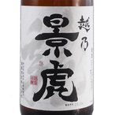

敬老の日プレゼント お酒 越乃景虎 龍 1800ml （新潟県/諸橋酒造/日本酒）
商品名 越乃景虎（こしのかげとら）龍 1800ml 蔵元 諸橋酒造（新潟県） 原料米 五百万石 原材料名 米/米麹/醸造アルコール 精米歩合 65％ アルコール度数 15〜16度 日本酒度 +5 酸度 1.3 酵母 - クール便 夏期推奨 当店について 「酒楽SHOP」は大正5年から続く、台東区の酒販店「ヤマロク」のインターネット通販ショップです。 都内最大級の酒専用庫「純米入谷蔵」では蔵元さんから 直送いただいた純米酒を中心としたお酒を、温度管理・鮮度管理を徹底して、お客様のもとへお届けしております。 ラッピングも承ります。ギフトやお中元・お歳暮、お世話になった方へ、日本酒・梅酒・焼酎などぜひご利用ください。